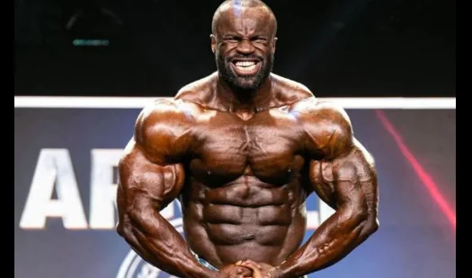
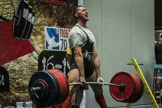
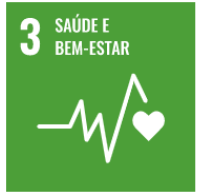

FISICULTURISMO

O fisiculturismo é uma modalidade esportiva que visa o desenvolvimento muscular máximo através de exercícios de resistência e uma dieta rigorosa. Os praticantes dessa modalidade buscam a hipertrofia muscular, ou seja, o aumento do tamanho das fibras musculares, para alcançar um padrão estético de corpo definido e volumoso.
POWERLIFITING

O powerlifting é uma modalidade esportiva que valoriza a força máxima em três movimentos específicos: agachamento, supino e levantamento terra. Ao contrário do fisiculturismo, que busca a estética muscular, o powerlifting foca na capacidade de levantar o maior peso possível em cada um desses exercícios.
SAÚDE E BEM-ESTAR

A prática regular de atividades físicas, como a musculação e o powerlifting, traz inúmeros benefícios para a saúde e o bem-estar. Além do desenvolvimento muscular e da força, faz bem para mentalidade, pois a prática de musculação leva a uma rotina onde a disciplina, a persistência e a superação de limites se tornam parte do dia a dia. Isso contribui para uma maior autoestima, redução do estresse e ansiedade, além de promover um senso de realização e bem-estar geral.